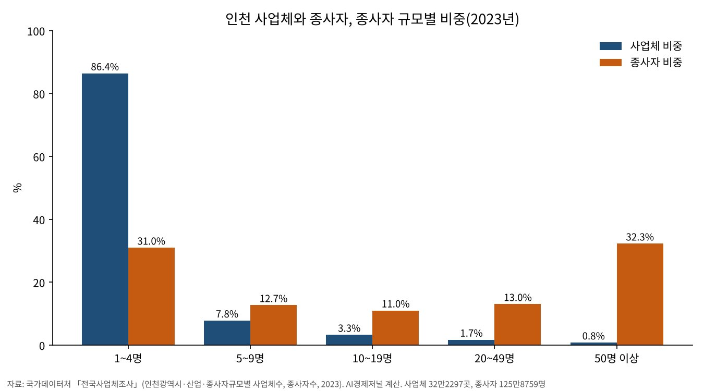

12월부터 노동감독권 지자체로, 인천시 노동국 내년 1월
30명 미만 사업장 감독, 12월 8일 시·도로
경기·제주 즉시 착수, 경기 감독관 170명
인천 노동감독관 30명 증원, 조례안 시의회로
AI경제저널=김갑봉 기자 | 2026년 12월 8일 노동감독관 직무집행법이 시행된다. 이날부터 고용노동부는 상시근로자 30명 미만 사업장의 감독 권한 일부를 시·도에 넘길 수 있다.
경기도와 제주도는 그날 감독에 들어갈 예정이다. 인천시는 경제국에 노동감독과를 두고 지방노동감독관 30명을 늘리는 조직개편안을 냈다. 시의회 의결을 거쳐 2027년 1월 시행할 계획이다. 작은 사업장의 임금과 안전을 점검하는 기관이 하나 더 생긴다.
근로감독관이라는 이름도 바뀐다. 1953년 근로기준법 제정 뒤 73년 동안 쓴 이름이다. 새 법은 이를 노동감독관으로 부르고, 시·도의 감독관을 지방노동감독관으로 정한다.
법이 시·도에 넘긴 것
노동감독관 직무집행법은 2026년 4월 7일 제정됐다. 법률 제21534호다. 위임은 제28조에 담겨 있다. 장관은 30명 미만 사업장 감독 권한의 일부를 시·도지사에게 위임할 수 있다.
위임 범위는 중앙과 지방의 협의체에서 미리 협의하고 대통령령으로 정한다. 위임받은 시·도는 지방노동감독관을 둔다. 이들은 위임 범위 안에서 사법경찰관리의 권한도 쓴다.
장관은 위임 전에 시·도의 수행능력을 점검하고, 위임 뒤에는 실적을 해마다 평가할 수 있다. 시정명령이나 직무이행명령을 따르지 않으면 위임을 거둘 수 있다.
법은 감독관의 독립도 적는다. 제29조는 정당한 직무를 한 지방노동감독관에게 시·도지사나 상급자가 불리한 처우를 하지 못하게 한다. 부당한 지시를 받으면 장관에게 조치를 요청할 수 있다.
제34조는 지방노동감독관의 직무와 역량 강화에 드는 경비를 국가가 부담한다고 정한다. 감독관 교육은 고용노동부 장관과 시·도지사가 해마다 계획을 세워 한다.
정부가 그린 감독 지도
고용노동부는 2026년 1월 14일 근로감독행정 혁신 방안을 내놨다. 사업장 감독 물량을 5만여곳에서 2026년 9만곳, 2027년 14만곳으로 늘린다. 근로감독관은 2026년까지 2000명 늘린다.
목표는 전체 사업장의 7%다. 고용노동부는 이 수준을 경제협력개발기구 평균이라고 밝혔다. 30명 미만 사업장 감독의 지방 위임도 이 방안에 들어 있다.
7월 27일 중앙지방정책협의회에서 고용노동부는 16개 시·도에 준비를 당부했다. 행정안전부가 우선 배정한 지방노동감독관은 120명이다.
9월 10일에는 중앙과 지방의 첫 법정 노동감독 협의체인 제1회 전국노동감독협의회를 열었다. 9개 권역별 지역노동감독협의회도 꾸렸다. 고용노동부는 10월 25일 신규 지방노동감독관의 감독학교를 시작했다고 밝혔다. 2주 이론과 6주 실습이다.
경기와 제주는 12월 8일
경기도는 7월 22일 고용노동부와 지방노동감독 업무협약을 맺었다. 고용노동부는 경기도를 산업재해 위험이 높은 업종과 영세사업장이 몰린 지역이라고 설명했다. 고용노동부는 이를 민선 9기 출범 뒤 첫 협력 사례라고 밝혔다. 경기도는 노동감독관 170명 채용에 들어갔다.
고용노동부는 9월 10일 선도 지방정부인 경기와 제주가 12월 8일 법 시행 즉시 사업장 감독에 착수한다고 밝혔다. 감독 목적은 처벌보다 위반 예방과 노무관리 체계 정착 지원에 둔다고 했다.
7월 23일에는 지방노동관서와 지방정부 담당자 100여명이 워크숍에서 추진방안과 협력사항을 점검했다. 신규 감독관은 수료 평가를 통과해야 자격을 얻는다.
고용노동부는 5개 지방정부의 위임사무 수행능력을 점검하고, 11월 중 위임 사업장을 고른 뒤 감독에 들어간다고 밝혔다. 여건이 모자라면 보완 조치를 한다.
인천의 준비, 팀 하나와 과 하나
국가데이터처 전국사업체조사를 보면 2023년 인천 사업체는 32만2297곳, 종사자는 125만8759명이다. 종사자 20명 미만 사업체가 31만4192곳으로 97.5%다.
이들 사업체에서 일하는 사람은 68만8316명으로 인천 종사자의 54.7%다. AI경제저널이 규모별 표로 계산했다. 통계의 구간이 20~49명이라 30명 미만만 따로 셀 수는 없다.

인천시는 경제국 노동정책과 안에 노동국신설팀을 두고 있다. 팀은 지방노동감독관 정원과 조직개편, 위임 대상 사업장 범위 협의, 감독관 인력과 파견을 맡는다.
사업장 감독 자체시행계획, 감독관 사무공간과 교육, 합동 기초노동질서 점검도 이 팀 일이다. 전국·지방 노동감독협의회 업무도 맡는다. 인천시 조직도에 적힌 내용이다.
인천시는 10월 29일 2027년 상반기 조직개편안을 냈다. 경제국에 노동감독과를 새로 두고 지방노동감독관 30명을 늘린다. 총정원은 7702명에서 7732명이 된다.
조례 개정안은 11월 중 제314회 인천시의회에 낸다. 12월 심의와 의결을 거쳐 2027년 1월 조직개편을 시행할 계획이다. 인천의 사업장 감독 착수 시기는 인천시와 고용노동부 발표에 아직 없다.
감독이 노동자에게 닿으려면
김증호 독립연구자는 노동정책연구 2024년 24권 1호 논문에서 사업장 감독의 문제로 낮은 적발건수와 적발률을 꼽았다. 낮은 감독 결과는 기업의 자율적인 노동법 준수 의지를 약하게 할 수 있다고 봤다.
시정이 끝나야 처리되는 완전시정 방식도 짚었다. 업무부담과 평가 탓에 경미한 위반 적발에 그치거나 적발을 피하게 할 개연성이 높다고 분석했다.
이승욱 이화여대 교수는 2025년 12월 3일 고용노동부 토론회에서 발제했다. 권한을 지방에 넘겨도 국제노동기구가 요구하는 관리·감독 기능은 중앙정부가 가져야 한다는 내용이다.
이 교수는 중앙과 지방의 조정, 지방에 대한 인적·물적 지원, 교육·훈련이 필요하다고 했다. 김영훈 고용노동부 장관은 근로감독 제도가 없으면 노동법은 "한낱 사문에 불과하다"고 말했다.
11월 중 위임 사업장 선정, 12월 8일 법 시행, 12월 인천시의회 조례 심의, 2027년 1월 인천시 조직개편 시행 예정이 차례로 남았다.
참고문헌
- 김증호, 「사업장 근로감독의 실효성 제고 방안: 행동경제학적 대안을 중심으로」, 『노동정책연구』 24권 1호, 한국노동연구원, 2024, 75~105쪽, https://www.kci.go.kr/kciportal/ci/sereArticleSearch/ciSereArtiView.kci?sereArticleSearchBean.artiId=ART003063541
- "인천광역시·산업·종사자규모별 사업체수, 종사자수(2020~)", 국가데이터처 전국사업체조사, 2023년 자료, https://kosis.kr/statHtml/statHtml.do?orgId=101&tblId=INH_1K52D03_23
- 「노동감독관 직무집행법」(법률 제21534호, 2026.4.7. 제정, 2026.12.8. 시행), 국가법령정보센터, https://www.law.go.kr/법령/노동감독관직무집행법
- "인천시, 2027년 상반기 조직개편 추진...'노동감독과·평화협력과' 신설", 인천광역시, 2026.10.29, https://www.incheon.go.kr/IC010205/view?repSeq=DOM_0000000015854013
- "인천시, 28일 북부근로자종합복지관 개관식 개최, 노동자 맞춤형 복합공간으로 '새단장'", 인천광역시, 2026.8.28, https://www.incheon.go.kr/IC010205/view?repSeq=DOM_0000000015421890 (사진, 공공누리 제1유형 출처표시)
- "직원정보 — 경제국 노동정책과", 인천광역시 누리집 조직도, 2026.11.11 열람, https://www.incheon.go.kr/IC040202?srchSttus=6287007
- "「근로감독 행정 혁신」으로 모두가 행복하게 일할 수 있는 나라를 만들겠습니다", 고용노동부, 2026.1.14, https://www.moel.go.kr/news/enews/report/enewsView.do?news_seq=18850
- "근로감독의 현장에서 근로감독의 미래를 이야기하다", 고용노동부, 2025.12.3, https://www.moel.go.kr/news/enews/report/enewsView.do?news_seq=18686
- "노동부-경기도, 지방감독시대를 열다...민선9기 첫 업무협약 체결", 고용노동부, 2026.7.22, https://eiec.kdi.re.kr/policy/materialView.do?num=284593
- "「12월 지방노동감독 첫선」...노동부, 16개 시·도에 빈틈없는 준비 당부", 고용노동부, 2026.7.27, https://eiec.kdi.re.kr/policy/materialView.do?num=284751
- "제1회 전국노동감독협의회 개최 … 지방 노동감독 청사진 공개", 고용노동부, 2026.9.10, https://eiec.kdi.re.kr/policy/materialView.do?num=286624
- "신규 지방노동감독관, 「감독학교」에서 베테랑의 노하우 배운다", 고용노동부, 2026.10.25, https://eiec.kdi.re.kr/policy/materialView.do?num=288498
[사진 출처]
- [사진1] 인천광역시 보도자료 「인천시, 28일 북부근로자종합복지관 개관식 개최」(2026.8.28) 붙임 사진, 공공누리 제1유형(출처표시) https://www.incheon.go.kr/IC010205/view?repSeq=DOM_0000000015421890 / [도표1] 국가데이터처 전국사업체조사(2023) 인천 표로 AI경제저널 작성
관련기사
- 청년 많이 일하는 100곳, 장시간 노동·공짜 야근 감독 받는다
- 노동 몫 줄어든 원천, 기계값·이윤 폭·집값 셋으로 갈린다
- [경제] 최저임금 16.4% 오른 해, 고령 노동자 인지점수 떨어졌다
저작권자 © AI경제저널 무단전재 및 재배포, AI학습 및 활용 금지